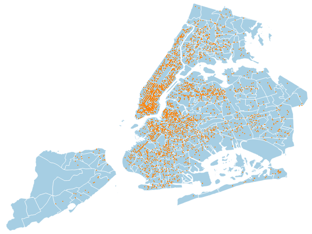

Map 1: A map of 2014 NYC traffic collisions where the location is available. Each point is a traffic accident in which at least 1 cyclist was injured. The point map illustrates that many accidents happened on the major North-South Avenues in Manhattan, an observation that would not be easily seen in a chorpleth map. Surprisingly, there are relatively few accidents on the West Side Highway despite the Hudson River Bike Path access. It was created using QGIS.
Maps 2(a) and 2(b): Two maps of 2014 NYC traffic collisions where the location is available. The first map colors Neighborhood Tabulation Areas (NTAs) by the raw number of cyclists injured in that borough. It shows that the most cyclists are injured in Lower and Midtown Manhattan. However, there are still a decent number of injuries in Brooklyn, Queens, and Upper Manhattan as well. Given that some boroughs have larger land areas, the second map colors the NTAs the same way but normalized for the area of the region. The story changes slightly - cyclist injuries are more concentrated in lower Manhattan given the high raw numbers but smaller sizes of the NTAs. It was created using QGIS.
Map 3: The map below depicts US airports which have scheduled service by state. Each state is colored according to the number of airports within the state, adjusted for area. I originally tried making the map without this area normalization and not surprising, the larger states generally had the larger number of airports. Of course, this original map was not very interesting. The shapefile and csv data were combined using QGIS but the map was built in d3. I calculated the area of the shapes using the QGIS field calculator (function = '$area').